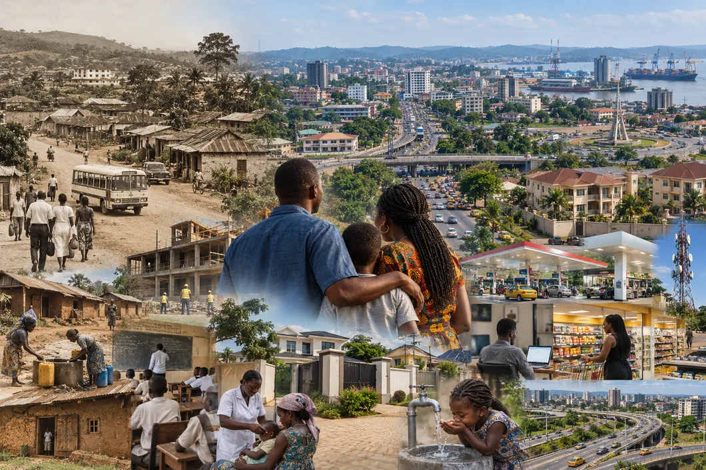

Cameroun 1982 → 2026 : les Camerounais deviennent-ils matériellement plus prospères ?
Quarante-quatre ans de transformations économiques et matérielles pour comprendre comment le niveau de vie des Camerounais a réellement évolué.

Composition LCIR — le même pays, à quarante ans d’intervalle.
La prospérité laisse des traces. Quand les revenus sont mal mesurés, on peut observer les actifs qu’ils financent.
Le classement Legatum 2026 : une photographie, non un film
Le Legatum Prosperity Index 2026 place le Cameroun au 133e rang. Pris comme une photographie multidimensionnelle, ce classement peut signaler des faiblesses institutionnelles ou sociales. Mais il devient trompeur dès qu’on l’utilise pour raconter l’histoire du niveau de vie camerounais. La question centrale de cet article est différente : le Camerounais de 2026 vit-il dans le même univers économique, matériel et social que celui de 1982 ? Les données montrent clairement que non.
Pour le comprendre, il faut quitter le commentaire instantané et regarder quarante-quatre ans de transformation. La prospérité ne se résume pas à un revenu affiché en dollars : elle se lit dans la quantité et la qualité des biens accessibles, dans les logements construits, l’énergie disponible, la mobilité, la santé, les communications, les services financiers, l’investissement privé, l’extension des marchés et surtout dans le nombre de personnes qui accèdent à ces possibilités.
1. La courbe longue : la crise a cassé une dynamique, mais elle n’a pas figé le Cameroun en 1986
La série historique de consommation réelle par habitant est utile précisément parce qu’elle corrige l’inflation. Elle montre un Cameroun autour de 871 dollars constants par habitant en 1982, culminant à environ 1 007 dollars en 1986, puis frappé par une crise d’une violence exceptionnelle. Le niveau tombe autour de 656 dollars en 1995. Ce passage ne raconte donc pas une stagnation de quarante ans : il raconte d’abord une destruction massive de pouvoir de consommation, puis un long processus de reconstruction.
À partir de la seconde moitié des années 1990, la trajectoire repart : environ 760 dollars en 2000, 847 en 2010, 893 en 2013 et près de 996 en 2019 dans l’ancienne base. Le point essentiel est que le retour vers les niveaux réels d’avant-crise s’effectue dans un pays radicalement différent : beaucoup plus peuplé, plus urbanisé, plus ouvert, plus connecté, plus diversifié et doté d’un éventail de biens et services sans commune mesure avec celui des années 1980. Le même ordre de grandeur monétaire par habitant ne signifie donc pas le même niveau de vie concret.
La série récente en dollars constants de 2015 confirme la poursuite de la progression : environ 1 034 dollars en 2015 contre 1 096 en 2024, malgré le choc Covid. Il faut surtout retenir un point méthodologique : les dollars « constants » corrigent déjà l’effet général de l’inflation. En revanche, ils ne mesurent pas entièrement l’élargissement des choix, la baisse du prix relatif de certaines technologies, l’amélioration de la santé, l’extension des infrastructures, la taille du marché ou l’apparition de services qui n’existaient pas en 1986.
2. Une société peut s’enrichir sans que son revenu statistique raconte toute l’histoire
C’est ici que l’analyse devient décisive. Deux sociétés peuvent afficher une consommation réelle par habitant voisine tout en offrant des niveaux de vie très différents. Il faut donc regarder ce que le revenu permet réellement d’obtenir. Et sur ce terrain, la transformation du ménage camerounais est considérable.
En 1991, l’Enquête Démographique et de Santé relevait seulement 14,2 % des ménages avec un téléviseur, 10,2 % avec un réfrigérateur, 7,6 % avec une motocyclette et 5,1 % avec une voiture. En 2022, l’enquête MIS mesure 51 % des ménages avec un téléviseur, 25,3 % avec un réfrigérateur ou congélateur, 23,3 % avec une moto ou un scooter et 9 % avec une voiture ou un camion.
Le ménage de 2022 possède en outre des biens qui n’existaient pratiquement pas dans le panier de 1991 : téléphone mobile pour 89,4 % des ménages, ordinateur portable pour 12,2 %, modem ou routeur pour 7,7 %. La consommation ne s’est donc pas seulement accrue : elle s’est complexifiée.
3. Le téléphone raconte à lui seul une révolution de consommation
En 1995, le Cameroun ne comptait que quelques milliers d’abonnements mobiles. En 2000, environ 103 000. En 2005, 2,25 millions ; en 2010, 8,64 millions ; en 2015, 18,16 millions ; en 2024, 31,52 millions. La Banque mondiale donne alors 108 abonnements pour 100 habitants — un ratio supérieur à 100 parce qu’une même personne peut détenir plusieurs cartes SIM.
Ce changement crée un nouvel écosystème de dépenses récurrentes : terminaux, recharge, data, Internet, énergie, réparation, accessoires, transferts et paiements. En 2024, l’ART recense plus de 15 millions d’abonnements Internet et plus de 11 millions d’abonnés actifs aux services financiers mobiles. La prospérité matérielle contemporaine se mesure aussi en gigaoctets et en transactions.
4. Du feu de bois au GPL : la modernisation du panier énergétique
Le gaz domestique constitue un autre excellent marqueur. Les quantités de GPL mises à la consommation passent de 62 120 tonnes en 2010 à 87 471 tonnes en 2014. En 2023, le MINFI rapporte 208 083 tonnes mises à la consommation. En treize ans, le volume a donc plus que triplé.
Cette hausse traduit à la fois la croissance démographique, l’urbanisation et la substitution progressive vers des modes de cuisson modernes. Elle ne doit donc pas être interprétée comme un pur indicateur de richesse par habitant ; elle confirme néanmoins l’élargissement massif du marché domestique moderne.
5. Les maisons sont aussi des données économiques : suivre le ciment pour lire la ville
La transformation urbaine n’est pas une impression anecdotique : elle saute aux yeux à Douala, Yaoundé, Bafoussam, Kribi, Garoua, Bamenda et dans de nombreuses villes secondaires. Lotissements périphériques, duplex, immeubles locatifs, résidences de standing, hôtels, commerces et nouvelles centralités urbaines matérialisent des milliers de décisions privées d’investissement et d’accumulation patrimoniale. Cette transformation doit être mesurée, mais elle ne doit pas non plus être minimisée sous prétexte qu’elle ne rentre pas parfaitement dans un indicateur de revenu.
Le ciment est l’un des meilleurs marqueurs. Dangote estimait la consommation camerounaise à environ 2,5 millions de tonnes en 2014. Pour 2023, le groupe estime le marché à 4 millions de tonnes : environ +60 % en neuf ans. Une partie provient évidemment des routes, ponts et autres infrastructures publiques ; mais Dangote mentionne aussi explicitement la demande du marché local et les projets privés parmi les moteurs du secteur.
Le signal devient encore plus intéressant lorsqu’on regarde l’offre industrielle. Le marché camerounais est passé de la domination historique de Cimencam à l’arrivée de Dangote, Cimaf, Mira, Cimpor et de nouveaux producteurs. Les sources sectorielles situent désormais la capacité nationale autour de 12 millions de tonnes par an en 2026. Une industrie ne multiplie pas durablement les capacités de broyage et de production sans anticiper un marché de construction profond.
Il faut toutefois éviter le raccourci : capacité installée ne signifie pas consommation. La surcapacité actuelle montre même que l’offre industrielle a couru plus vite que la demande. Mais l’existence d’un marché de plusieurs millions de tonnes, alors qu’il était nettement plus petit une décennie auparavant, constitue une empreinte matérielle de l’expansion du bâti.
6. La ville elle-même devient une archive de l’accumulation privée
Une maison privée est un actif patrimonial avant d’être une simple dépense. Lorsqu’un ménage ou un membre de la diaspora finance un terrain puis un duplex à Yaoundé, une villa à Kribi ou un immeuble locatif à Douala, cette accumulation se transforme en demande de ciment, fer, sable, carrelage, aluminium, sanitaires, peinture, bois, meubles, climatiseurs, électroménager et services de main-d’œuvre.
La croissance urbaine ne prouve donc pas que chaque résident s’enrichit. Elle montre néanmoins qu’une masse croissante de capital privé est immobilisée dans le foncier et le bâti. C’est une dimension que le PIB par habitant et les enquêtes de revenu captent imparfaitement, notamment lorsque les revenus sont informels ou proviennent de la diaspora.
7. Les importations révèlent la profondeur du marché — mais pas uniquement la richesse
Les importations camerounaises de marchandises sont estimées par la CNUCED à environ 2,7 milliards de dollars en 2005, 5,1 milliards en 2010, 6,0 milliards en 2015 et 8,2 milliards en 2024. L’INS évalue pour sa part la facture 2024 à 4 999,4 milliards de FCFA.
Il serait faux de transformer ces 5 000 milliards en consommation des ménages : carburants, machines, équipements industriels, clinker, blé et riz en représentent une part importante. Mais l’évolution de la masse importée montre l’agrandissement de l’économie marchande. Pour mesurer la prospérité, il faut ensuite isoler les catégories directement liées à la consommation : véhicules, habillement, cosmétiques, électronique, ameublement, électroménager et autres biens discrétionnaires.
8. Automobile, mode, beauté, restauration : regarder la consommation discrétionnaire
La consommation discrétionnaire est particulièrement utile parce qu’elle commence là où les besoins vitaux cessent d’absorber tout le revenu. Les données commerciales montrent des importations significatives de véhicules, motos, vêtements et produits de beauté. Pour la seule parfumerie, WITS/Comtrade recense par exemple 341 880 dollars d’importations déclarées de parfums et eaux de toilette en 2023. Ce chiffre officiel doit être lu comme un minimum statistique : il ne capture pas correctement les achats personnels à l’étranger, les circuits informels ou certaines réexportations.
La présence croissante d’enseignes constitue un second indicateur. Carrefour ouvre son premier magasin camerounais à Bonamoussadi, puis CFAO développe plusieurs formats. PlaYce Yaoundé, inauguré en 2022, offre près de 17 000 m² de surface commerciale, un hypermarché Carrefour de 4 000 m² et 50 boutiques locales et internationales. Son dossier de lancement annonçait notamment l’arrivée de Jules, Lacoste et La Grande Récré. En 2026, l’exploitant annonce environ 3 millions de visites annuelles et prépare une extension du concept vers Douala.
L’intérêt de ces investissements est analytique : une enseigne internationale ne décide pas seulement en fonction du PIB national. Elle étudie le bassin de clientèle, la fréquentation, le panier moyen, la densité urbaine et la capacité à absorber une offre moderne. La multiplication de ces formats n’est donc pas une preuve suffisante de prospérité, mais elle constitue un signal de marché supplémentaire lorsqu’elle converge avec les autres données.
9. Le point que les comparaisons monétaires ratent : 1986 et 2026 ne sont pas le même monde
Comparer mécaniquement les quelque 1 000 dollars réels par habitant du milieu des années 1980 à un niveau voisin plusieurs décennies plus tard conduit à une conclusion erronée : celle d’un simple retour au point de départ. Le revenu réel par habitant est indispensable, mais il ne suffit pas à mesurer l’ensemble des possibilités offertes à un individu. Entre-temps, la structure même de la société camerounaise a changé : le marché s’est agrandi, les villes se sont étendues, les infrastructures se sont densifiées, de nouveaux secteurs sont apparus et des biens autrefois rares ou inexistants sont devenus des consommations de masse.
Le Cameroun de 2026 ne distribue donc pas simplement un revenu comparable à celui de 1986 à davantage de personnes. Il met près de 30 millions d’habitants en interaction avec un marché national, des réseaux télécoms, des services financiers, des infrastructures énergétiques, des structures de santé, des établissements d’enseignement, des commerces modernes et des opportunités entrepreneuriales qui n’avaient ni la même profondeur ni la même diversité qu’au milieu des années 1980. C’est cette augmentation du champ des possibles qu’une simple courbe monétaire ne sait pas raconter.
10. Le niveau de vie, c’est aussi la taille du marché, la santé, l’électricité et l’investissement
En 1982, le Cameroun comptait environ 9,03 millions d’habitants. En 2025, il en compte près de 29,88 millions. La population a donc plus que triplé. Cela ne rend évidemment pas un indicateur « par habitant » plus élevé : par définition, celui-ci neutralise la taille de la population. Mais cette multiplication change radicalement la puissance du marché intérieur. Maintenir puis accroître un niveau de consommation par personne tout en le diffusant à une population trois fois plus nombreuse signifie que le volume total de biens, de services, de logements, d’énergie et d’infrastructures mobilisé par la société a changé d’échelle.
La santé apporte une démonstration encore plus directe. L’espérance de vie à la naissance est passée d’environ 51,8 ans en 1982 à près de 64 ans en 2024. Dans le même temps, la mortalité infantile est passée d’environ 101 décès pour 1 000 naissances vivantes à 40. Ce sont des transformations majeures du bien-être réel : davantage d’enfants survivent, davantage d’adultes vivent plus longtemps et les capacités sanitaires de la société, malgré leurs insuffisances, ne sont plus celles du début des années 1980.
Figures 10 et 11 — Banque mondiale / WDI : espérance de vie et mortalité infantile, 1982–2024.
L’accès à l’électricité donne une autre mesure du changement d’opportunités. Les séries comparables disponibles à partir des années 1990 indiquent environ 29 % de la population raccordée en 1991, 41 % en 2000 et 72 % en 2023. Dans les villes, le taux atteint près de 96 % en 2023. Cette progression reste incomplète, notamment dans les campagnes, mais elle modifie profondément ce qu’un ménage ou une entreprise peut faire : conserver des aliments, étudier le soir, utiliser des machines, accéder au numérique, produire des services ou créer une activité.
Enfin, la prospérité ne se lit pas seulement dans la consommation : elle se lit dans la capacité du secteur privé à immobiliser du capital. Le rapport 2025 du MINEPAT sur la dynamique de l’investissement privé évalue celui-ci à environ 5 110,6 milliards de FCFA, contre 4 630,2 milliards en 2024, soit près de 80 % de la formation brute de capital fixe. Ce chiffre change la lecture : le Cameroun contemporain n’est pas uniquement une société qui consomme davantage ; c’est aussi une économie dans laquelle entreprises et acteurs privés financent une part majeure de l’accumulation de capital.
Il faut donc parler sans complexe de progrès lorsque les données le montrent. Reconnaître ces avancées ne revient ni à nier la pauvreté, ni à nier les inégalités, ni à exonérer l’État des réformes encore nécessaires. Cela revient simplement à refuser une autre forme de biais : celle qui consiste à traiter toute amélioration africaine comme insuffisante avant même de reconnaître qu’elle a eu lieu.
11. Ce que le 133e rang Legatum ne peut pas raconter
Le Legatum reste utile pour mesurer des dimensions que la consommation ne capture pas. Mais il ne doit pas devenir un récit totalisant qui efface les transformations matérielles déjà accomplies. Un pays peut encore avoir des faiblesses de gouvernance, de services publics ou d’inclusion tout en ayant considérablement amélioré les conditions concrètes d’existence de sa population. Les deux constats peuvent être vrais simultanément.
L’ECAM 5 rappelle qu’en 2022, 37,7 % de la population vit sous le seuil national de pauvreté. Ce chiffre doit être pris au sérieux : une partie importante des Camerounais reste à l’écart de la prospérité. Mais il ne justifie pas d’effacer les progrès de ceux qui se sont équipés, urbanisés, connectés, bancarisés, motorisés ou ont accumulé un patrimoine. La bonne question est désormais celle de la diffusion de la prospérité, non celle de son inexistence.
L’erreur la plus répandue consiste précisément à confondre « le Cameroun n’a pas encore atteint la prospérité généralisée » avec « le Cameroun s’appauvrit ». Les données rassemblées dans cet article montrent le contraire sur le temps long : malgré la rupture des années 1980–1990, la société camerounaise a reconstruit sa capacité de consommation puis l’a accompagnée d’une spectaculaire diversification de ses biens, de ses services, de ses actifs et de ses opportunités.
12. Pourquoi cette croissance peut-elle donner le sentiment d’appauvrir ? Le piège d’une consommation extravertie
Jusqu’ici, l’analyse montre que la consommation, l’équipement et le patrimoine matériel des Camerounais ont progressé sur le temps long. Mais cette progression contient une faiblesse structurelle : une part importante de la demande intérieure est satisfaite par des biens produits à l’extérieur. Autrement dit, le Cameroun développe une société de consommation plus vite qu’il ne développe, dans certains segments, une société de production capable de répondre à cette consommation.
Le mécanisme est simple. Lorsqu’un revenu supplémentaire sert à acheter un bien produit au Cameroun, la dépense devient le chiffre d’affaires d’une entreprise locale, rémunère des salariés, paie des fournisseurs, génère des impôts et peut financer un nouvel investissement. Une même unité de revenu peut ainsi circuler plusieurs fois dans l’économie nationale. Lorsqu’elle sert au contraire à acheter un bien importé, une partie importante de cette demande se transforme en paiement extérieur. Le commerçant et le distributeur locaux conservent certes une marge, l’État perçoit des taxes et la logistique crée de l’activité, mais l’essentiel de la valeur industrielle du produit a été créé hors du Cameroun.
C’est ici que la croissance de la consommation peut devenir paradoxalement « appauvrissante » : non parce que consommer serait mauvais, mais parce que la hausse du pouvoir d’achat crée une demande que l’appareil productif national ne capte pas suffisamment. Plus le ménage camerounais s’équipe en véhicules, appareils électroniques, vêtements, matériaux de finition, produits alimentaires transformés ou biens premium importés, plus une partie de l’accroissement de sa capacité économique stimule des chaînes de production étrangères.
Figure 14 — INS, commerce extérieur 2024.
Les chiffres donnent une dimension concrète à ce problème. En 2024, les importations de biens atteignent 4 999,4 milliards de FCFA. Le déficit commercial reste de 1 747,3 milliards, et il grimpe à 3 071,4 milliards lorsque l’on retire le pétrole brut et le gaz naturel. Le Cameroun exporte donc encore insuffisamment de biens diversifiés pour financer la totalité de ce qu’il achète à l’extérieur. En 2025, le déficit commercial remonte même à 2 145,2 milliards de FCFA.
Il faut cependant éviter une confusion : toutes les importations ne sont pas une fuite improductive. En 2024, 15,7 % des importations sont constituées de machines et équipements mécaniques ou électriques. Lorsqu’une entreprise importe une machine pour produire localement, l’importation peut au contraire augmenter la capacité productive future. Le problème stratégique concerne surtout la dépendance durable aux importations pour satisfaire des consommations que l’économie camerounaise pourrait progressivement produire, transformer ou assembler elle-même.
Le riz et le blé illustrent cette fragilité : en 2024, les céréales importées représentent 543,7 milliards de FCFA, dont 318,6 milliards pour le riz et 214,1 milliards pour le blé. La dépendance ne porte donc pas seulement sur le luxe ou l’électronique ; elle touche également des consommations de masse. Plus la population s’enrichit sans substitution productive locale, plus l’augmentation de la demande peut accroître mécaniquement le besoin de devises.
De la consommation à l’investissement : le maillon faible
Cette structure affecte ensuite l’accumulation nationale. La Banque mondiale estime que l’épargne intérieure brute du Cameroun n’a représenté en moyenne qu’environ 15 % du PIB entre 2010 et 2023, contre 23 % dans des économies comparables. Elle souligne également que l’accumulation du capital est freinée par cette faiblesse de l’épargne domestique, par un crédit limité au secteur privé et par des investissements directs étrangers modestes.
Il faut être précis sur le mécanisme : un achat importé ne « détruit » pas automatiquement l’épargne déjà constituée. Mais une économie dans laquelle les ménages consacrent une part élevée de leur revenu disponible à la consommation laisse moins de revenu pour l’épargne ; et lorsque la demande supplémentaire porte fortement sur des importations, elle soutient davantage la production étrangère que la formation de capacités productives nationales. Le résultat peut être une économie où la consommation progresse plus vite que l’accumulation de capital productif privé.
Le contraste apparaît dans les comptes nationaux de 2024 : la croissance est portée par la consommation finale privée et l’investissement progresse surtout grâce à sa composante publique. Cela signifie que l’État demeure un moteur majeur de la formation de capital, tandis qu’une grande partie de la demande privée se concentre sur la consommation. Le défi n’est donc pas seulement de créer davantage de revenus, mais de transformer une part croissante de ces revenus en épargne financière, en capital d’entreprise, en production locale et en investissement privé.
Le véritable paradoxe : une prospérité qui enrichit aussi les producteurs étrangers
On comprend alors pourquoi une croissance pourtant réelle peut être ressentie comme frustrante. Le Camerounais consomme davantage, construit davantage, s’équipe davantage et utilise davantage de services ; mais une partie importante des biens qui matérialisent cette amélioration est fabriquée ailleurs. La prospérité du consommateur camerounais ne se transforme donc pas automatiquement en prospérité du producteur camerounais.
À chaque fois que la demande nationale pour un réfrigérateur, un véhicule, un vêtement, un smartphone, un équipement sanitaire ou un produit alimentaire transformé est satisfaite par une importation, le Cameroun conserve la valeur liée au commerce, au transport, à la distribution et à la fiscalité, mais abandonne à l’extérieur une grande partie de la valeur industrielle, des salaires qualifiés, de l’apprentissage technologique et des profits productifs.
C’est en ce sens — et seulement en ce sens — que l’on peut dire que l’État et l’économie camerounaise créent encore une partie de la croissance « pour l’extérieur » : la hausse des revenus et des infrastructures solvabilise une demande dont les capacités productives étrangères captent une fraction importante.
La prochaine étape de la prospérité camerounaise doit alors être productive : transformer le consommateur en épargnant, l’épargnant en investisseur, le commerçant en producteur ou distributeur-industrialisant, et la demande intérieure en marché d’amorçage pour des entreprises locales. L’import-substitution n’a pas besoin de signifier fermeture commerciale : elle consiste d’abord à identifier les segments où la demande camerounaise est désormais suffisamment profonde pour justifier la production, la transformation ou l’assemblage local.
Autrement dit, la question économique décisive n’est plus seulement : « les Camerounais consomment-ils davantage ? » Elle devient : « quelle part de cette consommation construit durablement du capital camerounais ? »
Conclusion — Oui, le Cameroun est matériellement beaucoup plus prospère qu’hier
Au terme de cette enquête, le constat doit être formulé clairement : le récit d’un Cameroun qui se serait continuellement appauvri depuis les années 1980 ne résiste pas à l’examen de la transformation matérielle du pays. La crise a bien provoqué un recul historique majeur. Mais le Cameroun qui en est sorti a progressivement reconstruit son niveau de consommation et, surtout, a créé autour du citoyen un univers de possibilités beaucoup plus large : logement, mobilité, énergie, santé, télécommunications, finance numérique, commerce, services et investissement privé.
Cela ne signifie pas que le travail est terminé. La pauvreté reste élevée, les inégalités territoriales sont fortes et la dépendance aux importations empêche encore une partie de cette prospérité de se transformer en capital productif national. Mais le diagnostic doit partir du réel : le Cameroun ne part plus du même point. Son enjeu n’est plus de démontrer qu’aucune transformation n’a eu lieu ; il est de convertir une prospérité matérielle déjà visible en prospérité productive, plus rapide, plus autonome et plus largement partagée.
Tableau de bord : les traces de la transformation matérielle
| Trace | Point ancien | Point récent | Lecture |
|---|---|---|---|
| Consommation réelle / hab. | 871 $ (1982, ancienne base) | 1 096 $ (2024, nouvelle base) | Comparer les trajectoires, pas les niveaux entre bases |
| Télévision | 14,2 % des ménages (1991) | 51,0 % (2022) | Diffusion d’un bien durable |
| Réfrigérateur | 10,2 % (1991) | 25,3 % (2022) | Équipement domestique |
| Téléphone mobile | 0,10 M abonnements (2000) | 31,52 M (2024) | Révolution d’usage |
| GPL | 62,1 kt (2010) | 208,1 kt (2023) | Modernisation énergétique |
| Ciment | 2,5 Mt (2014) | 4,0 Mt (2023) | Expansion construction / infrastructures |
| Importations | 2,7 Md $ (2005) | 8,2 Md $ (2024) | Profondeur de l’économie marchande |
| Commerce moderne | formats limités | PlaYce, Carrefour, Supeco, marques | Diversification de la demande urbaine |
SOURCES PRINCIPALES
- MINEPAT — Rapport sur la dynamique de l’investissement privé 2025 : 5 110,6 Mds FCFA en 2025 contre 4 630,2 Mds en 2024.
- Banque mondiale / ESMAP — accès à l’électricité : environ 29 % en 1991 ; 72 % en 2023 ; près de 95,8 % en zone urbaine en 2023.
- Banque mondiale / WDI — espérance de vie : 51,8 ans en 1982 ; 64,0 ans en 2024 ; mortalité infantile : 101,2 ‰ en 1982 ; 40,2 ‰ en 2024.
- Banque mondiale / WDI — population totale : 9,03 millions en 1982 ; 29,88 millions en 2025.
- Banque mondiale / WDI — consommation finale des ménages par habitant, prix constants ; séries historiques et base 2015.
- Banque mondiale / UIT — abonnements mobiles, 1995–2024.
- EDS Cameroun 1991 — biens durables possédés par les ménages.
- Cameroon MIS 2022 — possessions des ménages et moyens de transport.
- MINEE — Situation énergétique du Cameroun 2015 : mises à la consommation de GPL 2010–2014.
- MINFI — Note de conjoncture économique n°54 (avril 2024) : 208 083 tonnes de GPL mises à la consommation en 2023.
- Dangote Cement — Annual Report 2014 (marché camerounais estimé à 2,5 Mt) et FY2023 Results (4 Mt).
- INS — commerce extérieur 2024 : 4 999,4 Mds FCFA d’importations.
- CNUCED — profil Cameroun : importations de marchandises 2005, 2010, 2015 et 2024.
- CFAO / Carrefour — ouverture de Carrefour Market Bonamoussadi et PlaYce Yaoundé ; caractéristiques commerciales.
- BEAC / ART — services de paiement, Internet et finance mobile.
- Legatum Prosperity Index — rang actuel et profil détaillé du Cameroun.